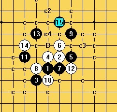

斜月1打 除最强16外的其他16地毯谱。
首页
五子棋交流
#1 斜月1打 除最强16外的其他16地毯谱。 作者：陨落之城 发表时间：2009-6-10 22:18:34

这个图中表的B还没有完成。还有几个白冲4 没有做，杀法应该差不多。
 斜月1打除最强16外的 其他16.rar
斜月1打除最强16外的 其他16.rar［ 失落刀 于 2009-6-10 22:50:01 时奖励此帖[金币加 20 威望加1］
［ 岳麓小棋后 于 2009-6-10 22:54:21 时花20金币送鲜花一朵］
［ 潇洒 于 2009-6-10 23:48:17 时花20金币送鲜花一朵］
［ 雨一直下 于 2009-6-10 23:50:30 时花20金币送鲜花一朵］
［ 流逝 于 2009-6-10 23:53:54 时花20金币送鲜花一朵］
［ wd1988 于 2009-6-11 21:56:10 时花20金币送鲜花一朵］
［ 白河愁 于 2009-10-17 13:15:38 时花20金币送鲜花一朵］
#2 Re:斜月1打 除最强16外的其他16地毯谱。 作者：aabb 发表时间：2009-6-10 22:29:35
顶帖领饼。。
#3 Re:斜月1打 除最强16外的其他16地毯谱。 作者：lfzxdh 发表时间：2009-6-10 22:29:38
额，解压出来有100G 太大鸟
太大鸟
#4 Re:斜月1打 除最强16外的其他16地毯谱。 作者：陨落之城 发表时间：2009-6-10 22:29:58

#5 Re:斜月1打 除最强16外的其他16地毯谱。 作者：失落刀 发表时间：2009-6-10 22:50:37
领饼。。
#6 Re:斜月1打 除最强16外的其他16地毯谱。 作者：岳麓小棋后 发表时间：2009-6-10 22:56:11
鲜花一朵是必须的，陨落，YOYO ――HOHO ――
――
#7 Re:斜月1打 除最强16外的其他16地毯谱。 作者：屏蔽 发表时间：2009-6-10 23:45:54
=======上图对应的爱五子棋谱代码如下，以便你拆解：========
h8i9g7h9j9i10i8g8j11h7f9j8g11f10i12h13j12h12k11i11
======================================================检查一个看看如何胜？
#8 Re:斜月1打 除最强16外的其他16地毯谱。 作者：流逝 发表时间：2009-6-10 23:46:36
 好大一个馅饼
好大一个馅饼
#9 Re:斜月1打 除最强16外的其他16地毯谱。 作者：陨落之城 发表时间：2009-6-10 23:55:07
回7L
=======上图对应的爱五子棋谱代码如下，以便你拆解：========
h8i9g7h9j9i10i8g8j11h7f9j8g11f10i12h13j12h12k11i11h11j13g10e8g13g12k10
======================================================
［ 屏蔽 于 2009-6-10 23:58:36 时花20金币送鲜花一朵］
#10 Re:斜月1打 除最强16外的其他16地毯谱。 作者：英雄九段 发表时间：2009-6-11 0:16:25

#11 Re:斜月1打 除最强16外的其他16地毯谱。 作者：松风竹影 发表时间：2009-6-11 6:26:43
 谁把最后的那个B弄完发上来
谁把最后的那个B弄完发上来
#12 Re:斜月1打 除最强16外的其他16地毯谱。 作者：wrwak 发表时间：2009-6-11 8:09:41
装大饼
#13 Re:Re:斜月1打 除最强16外的其他16地毯谱。 作者：wd1988 发表时间：2009-6-11 21:51:10
引用：
原文由 屏蔽 发表于 2009-6-10 23:45:54 :
=======上图对应的爱五子棋谱代码如下，以便你拆解：========
h8i9g7h9j9i10i8g8j11h7f9j8g11f10i12h13j12h12k11i11
======================================================检查一个看看如何胜？
这个也不知道是不是机缘巧合，我谱上正好有
=======上图对应的爱五子棋谱代码如下，以便你拆解：========
h8i9g7h9j9i10i8g8j11h7f9j8g11f10i12h13j12h12k11i11h11g10j10j13k10l11m9
======================================================
#14 Re:斜月1打 除最强16外的其他16地毯谱。 作者：wd1988 发表时间：2009-6-11 21:56:48
楼主惊天地泣鬼神，好大一张馅饼！好样的！建议凡是领了饼的都去献一朵花
#15 Re:Re:斜月1打 除最强16外的其他16地毯谱。 作者：雾都少帅 发表时间：2009-10-17 11:55:07
=======上图对应的爱五子棋谱代码如下，以便你拆解：========
h8i9g7h9j9i10i8g8j11h7f9j8g11f10i12h13j12j10h12g10h10k12d9d10f6e7e5d4f8g9i11h11h6e9
======================================================这个怎么胜
#16 Re:斜月1打 除最强16外的其他16地毯谱。 作者：蝶舞红枫 发表时间：2009-10-17 16:16:24
27走E6可胜吧……貌似相对简单…… ［ 陨落之城 于 2009-10-17 18:33:05 时花20金币送鲜花一朵］
#17 Re:斜月1打 除最强16外的其他16地毯谱。 作者：掌棋宣传员 发表时间：2009-10-18 21:15:57
才发现这个谱很强大啊,哈哈
#18 Re:斜月1打 除最强16外的其他16地毯谱。 作者：≈★诚心★≈ 发表时间：2009-12-12 16:14:32
1打已经地毯了